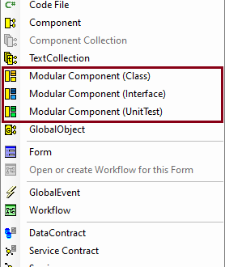
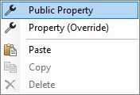
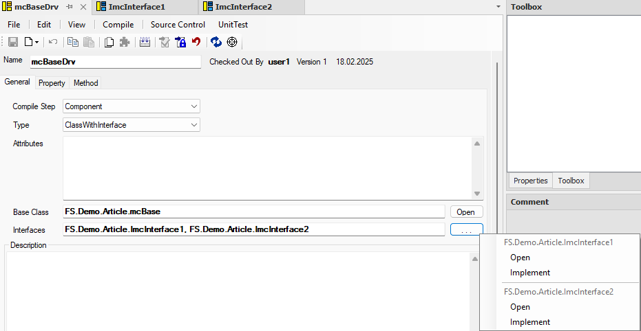
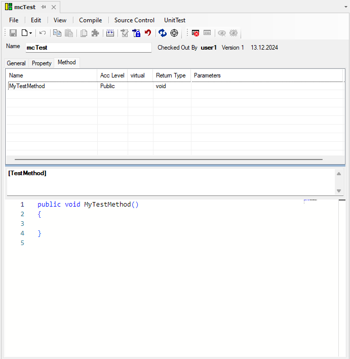

Modular Components
Mit den Modularen Components wollen wir einen Baukasten schaffen, mit dessen Hilfe wir Objekte ausschließlich mit dem benötigten Funktionsaufwand erstellen können.
Unsere Motivation
Aktuell gibt es für BusinessLogik und Datenobjekte nur die Möglichkeit eine Component als Objekttyp anzulegen. Dieser Objekttyp bringt viele Funktionen (New, Load, Save, NotifyChanged-Logik, etc.) mit sich, welche nicht für jeden Verwendungszweck des Objekts benötigt werden. Zum Beispiel sollte eine Component, die ausschließlich Businesslogik enthält, nicht automatisch in eine Form eingebunden werden können. Diese Funktionalität sollte bei Bedarf, wie bei einem Baukasten, ausgewählt werden können.
Derzeitiger Entwicklungsstand
Der Komponentenbaukasten wird iterativ erweitert. Derzeit umfasst er die folgenden Features:
Modular Components Arten

Die Auswahl der Modular Component-Art bestimmt Voreinstellungen der Modular Component. Bei Modular Component (Interface) kann der Type Interface nicht mehr verändert werden. Bei Modular Component (UnitTest) wird der Compile Step mit "UnitTest", das Attribute mit "[TestClass]" und die Base Class mit "FSTestBase" vorbelegt. Außerdem wird eine Methode
MyTestMethod()mit dem Attribute "[TestMethod]" hinzugefügt.Type Auswahl: Class, Class with Interface oder Interface Die Auswahl des Types entscheidet, ob eine Klasse und oder ein Interface generiert wird. Die beiden Optionen Class und Interface sind selbsterklärend. Bei der Option ClassWithInterface wird sowohl eine Klasse als auch ein Interface generiert. Bei diesem Type muss zudem der Compile Step beachtet werden! Die unterschiedliche Code-Generierung kann im Kapitel Code eingesehen werden.
Es kann der Compile Step, wie bei CodeFiles, definiert werden. Dies entscheidet in welche DLL die Modular Component kompiliert wird.
Note
Beim Typ ClassWithInterface gibt es die Besonderheit, dass bei Auswahl des Compile-Schritts Component das Interface in die Interface-Schicht, die Klasse jedoch in die Component-Schicht generiert wird.
An der Klasse oder dem Interface, an Properties, und Methoden können Attribute definiert werden. Eine ausführliche Erklärung der Attribute und Verhalten im Customizing erfolgt im Kapitel Attribute.
Protected Setter bei Properties
Copy & Paste der Methoden und Properties über verschiedene Objekttypen hinweg ist möglich. Zwischen Forms, Components und Modular Components kann kopiert werden. Da keine 1:1 Übersetzung möglich ist, muss vor allem bei der Kopie von Modular Component Properties in Components das Ergebnis ggf. überprüft werden.
BaseClass
Im Feld BaseClass sind nur Klassen erlaubt, welche mit Fullname angegeben werden müssen. Dies kann für externe Klassen oder nicht Modular Component-Klassen händisch eingetragen werden. Oder es wird eine derived Modular Component über das Derive-Command im Namespace-Baum einer Basis Modular Component erstellt - ähnlich zur Form-Vererbung.
Modular Components vom Typ Interface können keine BaseClass besitzen, das Feld wird deshalb nicht angezeigt. Stattdessen können im Feld Interfaces mehrere Basis-Interfaces definiert werden.
Im Customizing kann die BaseClass nicht geändert werden. Das Feld BaseClass zeigt den Wert aus dem Basis-Package an.
Im Property-Kontextmenü gibt es ebenfalls die neue Funktion: Property (Override). Mit welcher Properties aus der Basisklasse überschrieben werden können. Properties haben eine Checkbox Override erhalten, welche beim Überschreiben eines Properties automatisch angehakt wird.

Auch bei "Method (override)" werden Methoden aus der Basis aufgeführt.
Auf dem folgenden Screenshot wird der General Tab einer Class-Modular Component abgebildet.

Interfaces
Im Feld Interfaces können durch ein Komma getrennt mehrere Interfaces angegeben werden, welche die Modular Component implementieren soll. Es müssen FullNames (inkl. Namespaces) verwendet werden.

Diese Interfaces werden 1:1 in den generierten Code der Klasse des entsprechenden Packages übernommen. Für eine Implementierung muss manuell gesorgt werden. Für bekannte Interfaces gibt es aber eine Unterstützung zum Erzeugen der entsprechenden Properties und Methoden.
"Bekannte" Interfaces sind derzeit andere Modular Components.
Im Customizing kann eine Modular Component weitere Interfaces implementieren - die im Basis-Package definierten Interfaces können hingegen nicht entfernt werden. Aus diesem Grund stellt das Feld Interfaces nicht den Wert aus dem Basis-Package dar.
Über den Button neben dem Feld öffnet sich ein Context-Menü mit Aktionen für bekannte Interfaces.
Open: öffnet die entsprechende Modular Component.
Implement: sofern die angegebene Modular Component vom Typ Interface ist, werden die fehlenden Properties und Methoden automatisch erzeugt. Dabei wird nur das jeweilige Interface und nicht dessen Basis-Interface(s) betrachtet.
Funktionale Einschränkungen
Funktionen, welche aus Components bekannt sind, jedoch nicht für Modular Components umgesetzt wurden:
- Verwendung der Modular Components in DataBindings ist nicht möglich. Auch bei Textboxen mit Autovervollständigungen werden Modular Components nicht angezeit. Es muss der FullName der Modular Component angegeben werden.
- Properties haben derzeit nur einen External DataType. Es muss der FullName bspw. einer Component angegeben werden. MDTs stehen ebenfalls nicht zur Auswahl.
Bestandteile der Modular Component
- Type (nicht änderbar im Customizing)
- Class, ClassWithInterface, Interface
- Compile Step (nicht änderbar im Customizing)
- Interface, Component, UnitTest
- Base Class (nicht änderbar im Customizing)
- Description (²)
- Attributes (²)
Attribute werden im Customizing über die Packages hinweg summiert und im UseCode an das Interface beziehungsweise an die Klasse generiert. Beim Typ Class With Interface erhält das Interface keine Attribute.
(²) wird an die Klasse (bei Type Class und ClassWithInterface) oder an das Interface (bei Type Interface) im UseCode generiert.
Note
Bei Type ClassWithInterface und Compile Step Component wird das Interface in die Interface-Schicht generiert. Die zugehörige Klasse kommt in die Component-Schicht. Bei Type Class und Interface wird es in den ausgewählten Compile Step generiert.
Properties
| Properties | Class | Class With Interface | Interface |
|---|---|---|---|
| AccessLevel | public | internal | protected | private | public | internal | protected | private | public |
| AutoProp | x | x | x (nur public) |
| * Setter Type AutoProp | get | get set | protected set | get | get set | protected set | - |
| Field | x | x | - |
| * Setter Type Field | - | - | - |
| IndivProp | x | x | - |
| * Setter Type IndivProp | get | get set | protected set | get | get set | protected set | - |
| Attributes | x | x | x³ |
Code Generierung: AutoProperties und IndivProperties werden immer mit virtual bzw. im Customizing mit override generiert.
So sieht die UI im Bereich General der Properties aus:

Für die Anzeige des Codes gibt es hier eine gemeinsame Ansicht des Getter und Setter-Codes. Mit gedrückter Shift-Taste und Doppelklick auf den Splitter kann die Ansicht von Vertical zu Horizontal (Get/Set Code wird dann untereinander angezeigt) und andersherum gewechselt werden.

Public Properties werden automatisch virtual.
AutoProperty
Bei AutoProperties kann kein Get- oder Set-Code geschrieben werden.
public virtual FSstring Stuff { get; set; }
Individual Property
public virtual FSstring Stuff {
get{
// individuell definierter Code
}
set {
// individuell definierter Code
}
}
Fields
Fields können nicht gecustomized werden. Attribute werden somit immer im Code des jeweiligen Packages definiert.
Methods
| Methoden | Class | Class With Interface | Interface |
|---|---|---|---|
| Constructor | x | x | - |
| * Constructor - Attributes | - | - | - |
| protected Method | x | x | - |
| * protected Method Attributes | x | x | - |
| internal Method | x | x | x |
| * internal Method Attributes | x | x | x |
| Attributes | x | x | x(1) |
(1) Attribute werden bei Properties und Methods beim Typ Interface an den CodeCode des jeweiligen Packages, wo sie definiert wurden, im Code geschrieben. Dies verhält sich anders bei Class und ClassWithInterface. Hier werden die Attribute im UseCode an Properties und Methods gesammelt generiert.
TestMethod
Beim Typen UnitTest gibt es im Bereich der Methods das spezielle TestMethod-Command. Dieses Command fügt automatisch das Attribute "[TestMethod]" hinzu. TestMethods sind nicht virtual.

Code
Class mit Attributen und Customizing
[FSDemoAttribute]
[FSDemoCustomizeAttribute]
public class Stuff : FSDemoCustomize_Stuff
{
[FSDemoMethodAttribute]
[FSDemoCustomizeMethodAttribute]
public override void SetStuff(string stuff) => base.SetStuff(stuff);
[FSDemoPropertyAttribute]
[FSDemoCustomizePropertyAttribute]
public override string Stuff {
get => base.Stuff;
set => base.Stuff = value;
}
}
public class FSDemoCustomize_Stuff : FSDemo_Stuff
{
public override string Stuff {
get => base.Stuff;
set => base.Stuff = value;
}
public override void SetStuff(string stuff){
base.SetStuff(stuff + " customizing");
}
}
public class FSDemo_Stuff
{
public virtual string Stuff { get; set; }
public virtual void SetStuff(string stuff){
Stuff = stuff;
}
}
Generierter Code bei "ClassWithInterface" mit Customizing und BaseClass
// UseCode
public class Stuff : FSDemoCustomize_Stuff, IStuff { }
public interface IStuff : FSDemoCustomize_IStuff { }
// Customizing Package
public class FSDemoCustomize_Stuff : FSDemo_Stuff, FSDemoCustomize_IStuff { }
public interface FSDemoCustomize_IStuff: FSDemo_IStuff { }
// Basis Package
public class FSDemo_Stuff : BaseClass, FSDemo_IStuff { }
public interface FSDemo_IStuff { }